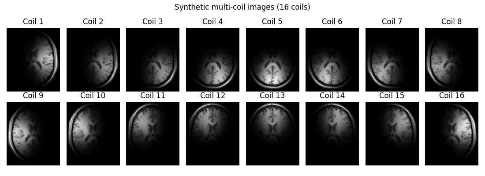
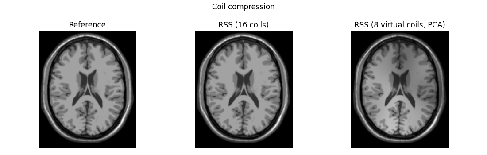
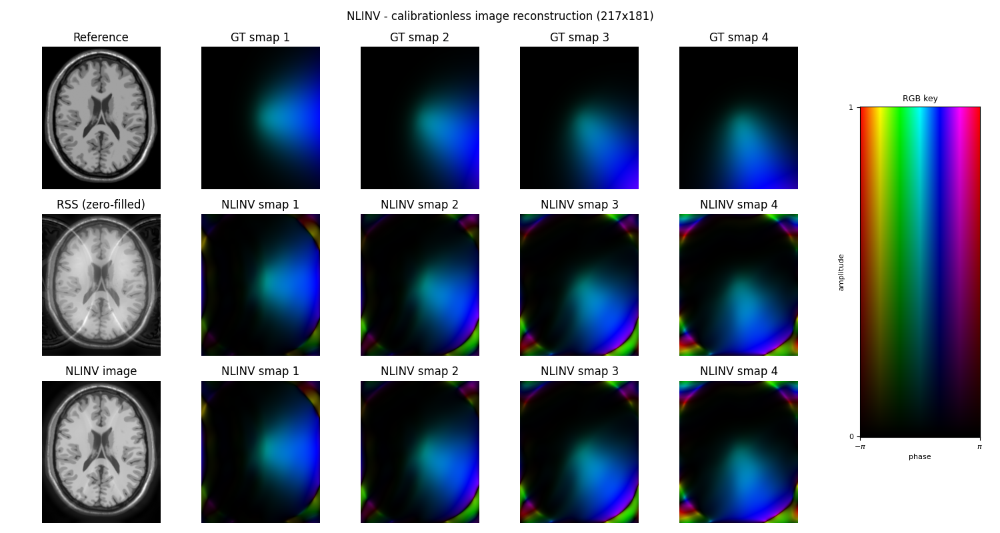
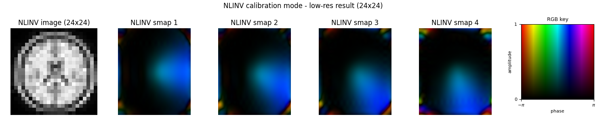
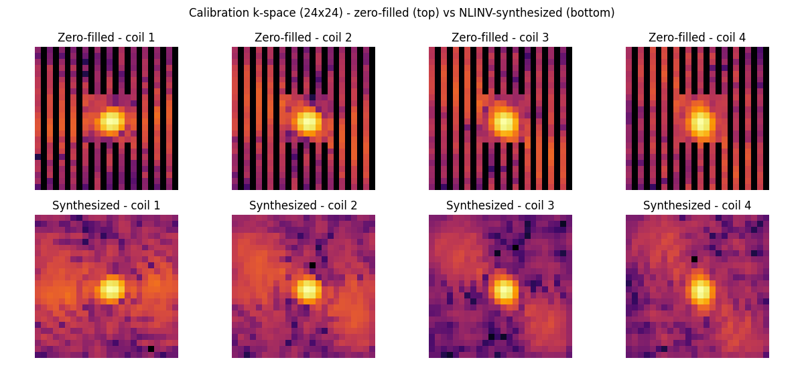
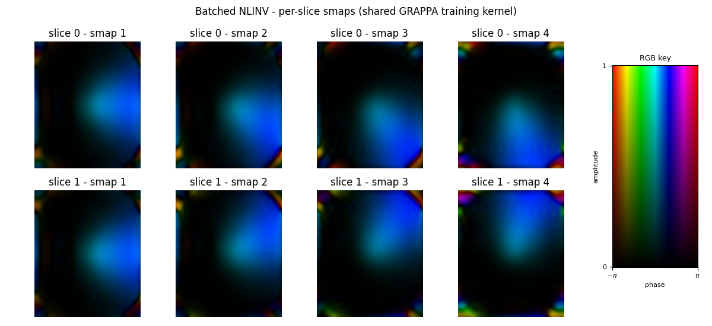

Note
Go to the end to download the full example code.
Utils Tour: Coil Compression and NLINV#
This example introduces two utility routines from pygrog.utils:
Coil compression (
coil_compress()) — reduces the number of receiver coils via PCA to speed up downstream processing without significant SNR loss.NLINV coil calibration (
nlinv_calib()) — estimates coil sensitivity maps from undersampled k-space data using the nonlinear-inverse (NLINV) algorithm.
All data use a BrainWeb T1-weighted phantom: a multi-coil dataset is constructed by multiplying it with synthetic coil sensitivity maps.
import matplotlib.colors as mcolors
import matplotlib.pyplot as plt
import numpy as np
import torch
from brainweb_dl import get_mri
image = get_mri(0, "T1")
Coil images shape: (16, 217, 181)
K-space shape : (16, 217, 181)
fig, axes = plt.subplots(2, n_coils // 2, figsize=(11, 4))

Coil Compression via PCA#
Use coil_compress() to reduce the number of receiver coils
via PCA on k-space data, reducing computational cost with minimal SNR loss.
The function returns the compressed k-space and the compression matrix
W of shape (n_virtual, n_coils).
# Prepare k-space data for compression
kspace_flat = kspace_full.reshape(n_coils, -1) # (n_coils, n_samples)
n_virtual = 8
from pygrog.utils import coil_compress
kspace_cc, W = coil_compress(kspace_flat, n_virtual)
print(f"\nOriginal coils : {kspace_flat.shape[0]}")
print(f"Virtual coils : {kspace_cc.shape[0]}")
print(f"Compression matrix: {W.shape}")
# Reconstruct coil images from compressed data
kspace_cc_full = kspace_cc.reshape(n_virtual, *image_shape)
coil_images_cc = np.fft.fftshift(
np.fft.ifft2(np.fft.ifftshift(kspace_cc_full, axes=(-2, -1))), axes=(-2, -1)
)
# RSS of compressed coils vs original
rss_orig = np.sqrt((np.abs(coil_images) ** 2).sum(0))
rss_cc = np.sqrt((np.abs(coil_images_cc) ** 2).sum(0))
Original coils : 16
Virtual coils : 8
Compression matrix: (8, 16)
fig, axes = plt.subplots(1, 3, figsize=(11, 3.5))

Note
Coil compression is lossless when n_coils >= original_n_coils and
near-lossless when the retained energy fraction is high (e.g. > 0.99).
Use a float threshold coil_compress(data, 0.99) for automatic rank
selection.
NLINV Sensitivity Estimation#
nlinv_calib() estimates coil sensitivity maps jointly
with the image using the nonlinear-inverse (NLINV) algorithm
(Uecker et al.2008). It requires a small fully-sampled ACS centre
to bootstrap, but no explicit prior knowledge of the sensitivity maps.
The function supports two modes: * ``cal_width=None`` - full k-space calibrationless reconstruction * ``cal_width=24`` - fast calibration mode with central k-space cropping
from pygrog.utils import nlinv_calib
acs = 8 # fully-sampled ACS centre width (columns), as in MATLAB reference
cal_width = 24 # NLINV internal calibration resolution for Step 2
# Cartesian undersampling mask: R=2 readout subsampling + 8-col ACS centre
mask = np.zeros(image_shape, dtype=bool)
mask[:, ::2] = True # R=2 subsampling on readout (column) direction
cx = image_shape[1] // 2
cy = image_shape[0] // 2
mask[cy - acs // 2 : cy + acs // 2, cx - acs // 2 : cx + acs // 2] = True # ACS
kspace_us = kspace_full * mask[np.newaxis]
print(f"\nUndersampling factor : {mask.size / mask.sum():.2f}x")
print(f"ACS region : all rows x {acs} cols")
print(f"Undersampled k-space : {kspace_us.shape}")
ncols_show = min(n_coils // 2, 4)
# Zero-filled RSS image from undersampled data (baseline)
coil_images_us = np.fft.fftshift(
np.fft.ifft2(np.fft.ifftshift(kspace_us, axes=(-2, -1))), axes=(-2, -1)
)
rss_us = np.sqrt((np.abs(coil_images_us) ** 2).sum(0))
Undersampling factor : 1.99x
ACS region : all rows x 8 cols
Undersampled k-space : (16, 217, 181)
NLINV Step 1: Full k-space calibrationless reconstruction#
Call nlinv_calib() with cal_width=None to solve
jointly for image and sensitivity maps using the entire undersampled k-space.
cal_width=None -> full k-space, no cropping, matching MATLAB reference
smaps_full, _, image_full = nlinv_calib(
kspace_us,
cal_width=None,
ndim=2,
mask=mask,
ret_cal=True,
ret_image=True,
)
smaps_full_np = (
smaps_full.numpy() if isinstance(smaps_full, torch.Tensor) else smaps_full
)
image_full_np = (
image_full.numpy() if isinstance(image_full, torch.Tensor) else image_full
)
print(f"\n[Step 1] Smaps shape : {smaps_full_np.shape}")
print(f"[Step 1] NLINV image shape: {image_full_np.shape}")
[Step 1] Smaps shape : (16, 217, 181)
[Step 1] NLINV image shape: (217, 181)
fig, axes = plt.subplots(3, ncols_show + 1, figsize=(3 * (ncols_show + 1), 8))

NLINV Step 2: Calibration mode with central k-space cropping#
Call nlinv_calib() with cal_width=24 to crop
to the central region and solve for low-resolution sensitivity maps and
a synthesized calibration k-space patch (useful for GRAPPA/GROG training).
smaps_cal, grappa_train, image_cal = nlinv_calib(
kspace_us,
cal_width=cal_width,
ndim=2,
mask=mask,
ret_cal=True,
ret_image=True,
)
smaps_cal_np = smaps_cal.numpy() if isinstance(smaps_cal, torch.Tensor) else smaps_cal
grappa_train_np = (
grappa_train.numpy() if isinstance(grappa_train, torch.Tensor) else grappa_train
)
image_cal_np = image_cal.numpy() if isinstance(image_cal, torch.Tensor) else image_cal
print(f"\n[Step 2] Smaps shape : {smaps_cal_np.shape}")
print(f"[Step 2] Low-res image shape: {image_cal_np.shape}")
print(f"[Step 2] Cal k-space shape : {grappa_train_np.shape}")
[Step 2] Smaps shape : (16, 217, 181)
[Step 2] Low-res image shape: (24, 24)
[Step 2] Cal k-space shape : (16, 24, 24)
# Low-res image and smaps at cal_width resolution
fig, axes = plt.subplots(1, ncols_show + 1, figsize=(3 * (ncols_show + 1), 3))


Note
In calibration mode (integer cal_width) the sensitivity maps are
estimated at low resolution and zero-padded to the full FOV - they are
smoother but less accurate near the FOV boundary. Use cal_width=None
when full image reconstruction quality matters; use an integer
cal_width when only the synthesized k-space patch and fast coil
estimates are needed (e.g.as input to GROG/GRAPPA kernel training).
plt.show()
Multi-slice batched NLINV calibration#
nlinv_calib() accepts a leading batch axis and runs
the calibration once per batch element. Sensitivity maps and image
reconstructions are returned per-slice; the synthesized GRAPPA training
k-space can optionally be averaged across the batch with
train_reduce='mean' to produce a single shared kernel.
batch_slices = np.stack([kspace_us, kspace_us[:, ::-1, :]], axis=0)
print(f"\n[Multi-slice] batched k-space shape : {batch_slices.shape}")
# Per-slice smaps + shared (mean-reduced) GRAPPA training k-space.
smaps_b, train_b_mean, image_b = nlinv_calib(
batch_slices,
cal_width=cal_width,
ndim=2,
ret_cal=True,
ret_image=True,
train_reduce="mean",
)
print(f"[Multi-slice] smaps shape : {tuple(smaps_b.shape)}")
print(f"[Multi-slice] image shape : {tuple(image_b.shape)}")
print(f"[Multi-slice] mean-train shape : {tuple(train_b_mean.shape)}")
[Multi-slice] batched k-space shape : (2, 16, 217, 181)
[Multi-slice] smaps shape : (2, 16, 217, 181)
[Multi-slice] image shape : (2, 24, 24)
[Multi-slice] mean-train shape : (16, 24, 24)
fig, axes = plt.subplots(2, ncols_show, figsize=(3 * ncols_show, 5.5))

Total running time of the script: (0 minutes 17.622 seconds)